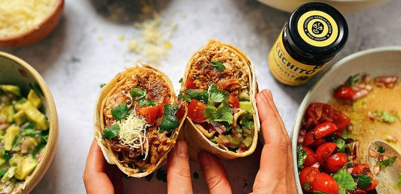
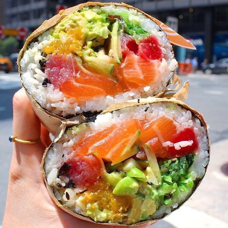

Traditional Burrito
Traditional Mexican burritos typically consist of a flour tortilla generously filled with flavorful ingredients like seasoned meat (such as beef, chicken, or pork), rice, beans, cheese, and a variety of toppings such as salsa, guacamole, sour cream, and shredded lettuce. Reviewers appreciate the harmonious blend of textures and flavors that a well-made burrito offers, with the soft tortilla providing a comforting contrast to the savory, protein-rich fillings and the vibrant freshness of the toppings. Whether it's the smoky char of grilled meats or the creamy richness of melted cheese, traditional Mexican burritos often earn praise for their ability to provide a satisfying and familiar meal that satisfies both the taste buds and the appetite.
Luckily, Los Angeles is bustling with authentic, renouned traditional burrito places. On the top of critic's list include: "Guisados," "La Azteca Tortilleria," "Burritos La Palma," "El Tepeyac Cafe," and "Lares Restaurant". If you're on the go, there are many chain eateries that can satisfy any traditional burrito craving; these include (but are not limited to): "Taco Bell," "Chipotle," "Dell Taco," and "El Huero". For even more spots, Food Republic published a comprehensive list of the best burritos in LA that is worth checking out. And frankly, the abundance of eateries signify its popularity to which many denote for its versatility, portability, cultural influence, nutrition, and favorful combinations that have opened the door to diverse spin-offs of the traditional Mexican burrito.
Breakfast Burrito

These burritos typically feature warm, fluffy scrambled eggs as the base, providing a comforting and satisfying start to the day. They are then filled with ingredients such as crispy bacon or savory sausage, melted cheese, and sometimes diced potatoes. The assembly of these ingredients into a soft tortilla shell creates a handheld masterpiece that balances the richness and freshness of ingredients like diced tomatoes, onions, and cilantro. Reviewers often appreciate the versatility of classic breakfast burritos, as they can be customized to suit individual preferences with the addition of ingredients like avocado, salsa, or hot sauce, adding an extra kick of flavor and heat. Overall, classic breakfast burritos receive high praise for their ability to provide a convenient and satisfying morning meal that brings comfort and joy to the taste buds.
Some of the best places to snag a breakfast burrito in Los Angeles include: "Taco Zone" in Echo Park, "Squirl" in Silverlake, and "Cofax" in the Fairfax District! A personal favorite on the USC campus is at "Dulce". For students, the portability of the breakfast burrito makes it an ideal choice for on the go, whether you're rushing to class or embarking on a weekend adventure. Regardless, the breakfast burrito is a beloved morning staple for many.
Poke Burrito
A poke burrito typically combines the essence of Hawaiian poke, featuring fresh, cubed raw fish, with the convenience of a burrito. Critics commend the high-quality ingredients that go into these creations, including sushi-grade fish varieties like tuna or salmon, paired with vegetables, such as avocado, cucumber, and seaweed salad. These ingredients are then nestled in a bed of seasoned rice and wrapped in a seaweed or soy paper, creating a handheld masterpiece that balances the freshness and creaminess of the fillings. The additional toppings and sauces, such as spicy mayo or sesame seeds, which add layers of flavor and depth to the pokeburrito are paised, resulting in a culinary experience that's both satisfying and adventurous.
This unique burrito is believed to have originated in California, particularly in Los Angeles, where chefs and food entrepreneurs sought to experiment with flavors and create innovative dishes. Such fusion reflects the multicultural nature of California cuisine, with its blend of Asian, Mexican, and American influences. Most notable places to consume a poke burrito include: "PokiNometry," "Sweetfin Poke,"Project Poke," and "Mainland Poke Shop." My personal favorite place to get a poke burrito is "Bear Flag Fish Co." in my hometown of Orange County!